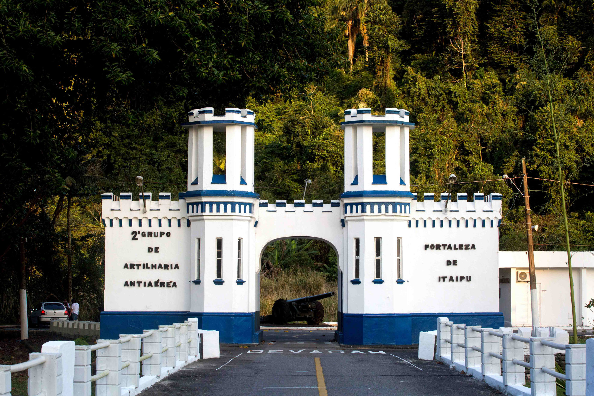
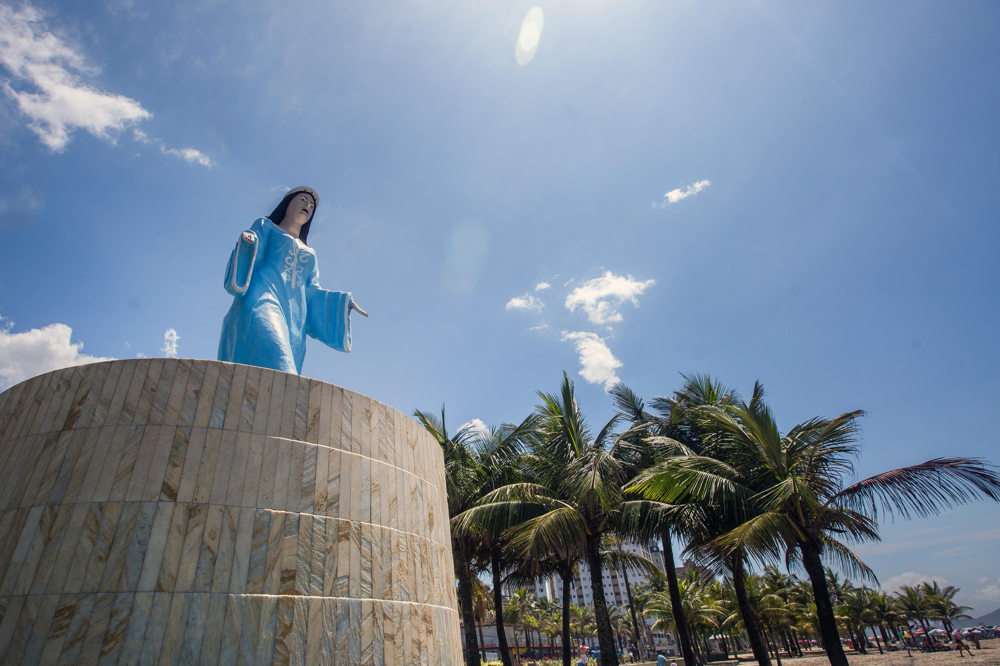

Fortaleza de Itaipu
A Fortaleza de Itaipu é um marco histórico, construído em 1902 para proteger o porto de Santos. Localizada na Praia Canto do Forte, oferece uma vista espetacular da Baía de Santos e abriga canhões antigos, além de um museu militar (Blog de Viagem e Turismo) (Costa Norte).
Saber mainEstátua de Iemanjá
Localizada na Praia Mirim, esta estátua de 9 metros é um tributo à Rainha do Mar e um importante local de devoção para os praticantes de religiões afro-brasileiras. A estátua está cercada por coqueiros e um sistema de iluminação especial (Costa Norte).
Saber mainForte
A Fortaleza de Itaipu é um marco histórico, construído em 1902 para proteger o porto de Santos. Localizada na Praia Canto do Forte, oferece uma vista espetacular da Baía de Santos e abriga canhões antigos, além de um museu militar (Blog de Viagem e Turismo) (Costa Norte).
Saber main